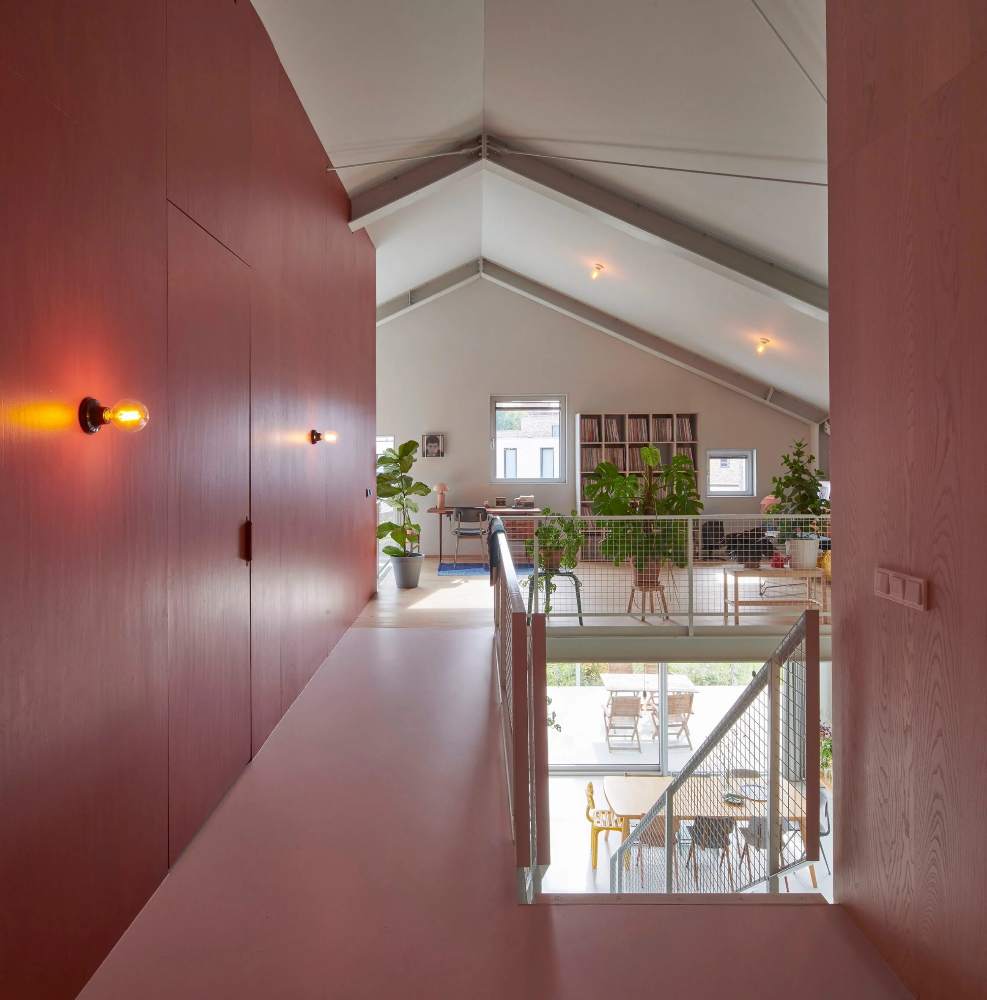

Hollandalı mimarlık ofisi Eek en Dekkers, Hollanda'nın Eindhoven kentinde, samimi, özel odalar içeren ve geniş bir iç mekana sahip ahır benzeri bir ev tasarladı.
Tasarımcı Piet Hein Eek ve mimar Iggie Dekkers yönetimindeki mimarlık ofisi, House R’yi birlikte vakit geçirme fırsatı isteyen bir aile için geniş sosyal alanlar içeren sade bir ev şeklinde tasarladı.
Proje, evlerin çoğunun temel beyaz hacimler olarak tasarlandığı bir mahallede ormanlık bir alanın yanında konumlanıyor. Ofis, bir ahırın hem ferahlığını hem de görünümünü çağrıştıracak farklı bir şey yaratmak için yola çıkmış.
Ev, tarımsal binaları hava koşullarına karşı korumak için kullanılan oluklu metali anımsatmak için profilli eloksallı alüminyumla kaplanmış. Geniş alanlar yaratmak için evin içi mümkün olduğunca açık tutulmuş. İki kat yükseklikteki yaşam alanlarında, ferahlık hissini artırmak için çatının iç eğimini takip eden tavanlar tasarlanmış.
Mimarlar, aşağıda bir bodrum katı oluşturmak için ana katı zemin seviyesinden 80 santimetre yükseltmiş. Bu kattaki stüdyo ve TV odası avluya bakan tam boy pencerelerle tamamlanmış.
Evin zemin seviyesinin üzerine çıkarılması ile yaşam alanlarına giren doğal ışığın miktarı artmış. Bina ayrıca, yakındaki ağaçların ve komşu mülklerin gölgesinde kalmasını önlemek için arsanın arkasına doğru inşa edilmiş.

Bir giriş holünden büyük bir mutfağa, yemek alanına ve asma kata yerleştirilen çalışma alanına geçiş planlanmış. Giriş holünün her iki yanında yer alan salon ve oyun alanlarında camlı sürgülü kapılar kullanılarak kapatılabilmesi ve bu şekilde çoğu zaman kapıların açık tutularak tüm alanların evin geri kalanıyla bağlantılı hissedilmesi sağlanmış.
Her kattaki pencere yerleşimleri, odaların gün ışığı gereksinimi ve mahremiyet seviyeleri gibi işlevsel gereksinimlerine göre uyarlanmış.

Bodrum açıklıkları, giren ışık miktarını optimize etmek için cepheden dışa doğru hafifçe çıkıntı yaparken, zemin katta bahçe ve ormanla bağlantı duygusunu artıran çerçevesiz pencereler ve sürgülü kapılar kullanılmış. Yatak odalarının bulunduğu üst kattaki pencereler, mahremiyeti korumak ve ek gölgeleme ekipmanı ihtiyacını ortadan kaldırmak için daha küçük boyda tasarlanmış.